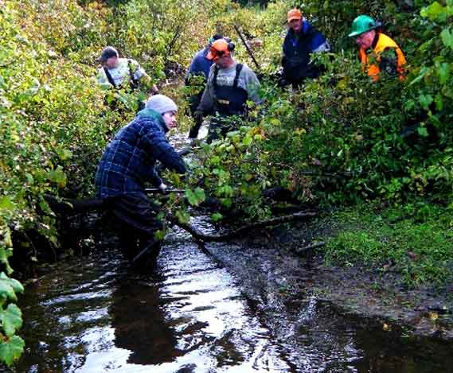
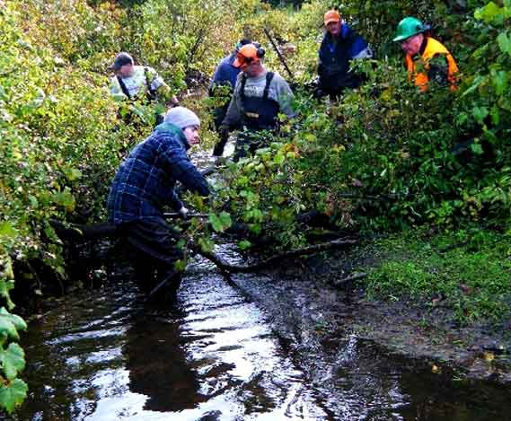

About the TRAA
ABOUT US
About Page
VIDEO
The TRAA Works at a Grassroots Level within the Thames River Watershed to:
 

In the spring of 1986 the TRAA was formed by anglers concerned with the state of the fishery in the Thames River watershed, particularly the dwindling smallmouth bass population in the North Thames River.
The TRAA is not a fishing club, although most members are anglers and share fishing as a common interest. We are a "hands on" environmental group who likes to work at a grass roots level.
The TRAA is a volunteer organization, governed by a formal constitution and by-laws. An elected Executive, with the guidence of the General Membership, sets the policies and direction for the TRAA.
The TRAA has a history of always having a core group of active members supported by those who just want to be part of the solution. Either way, every member of the TRAA is active in their advocacy for the health of the Thames River watershed and its inhbitants.